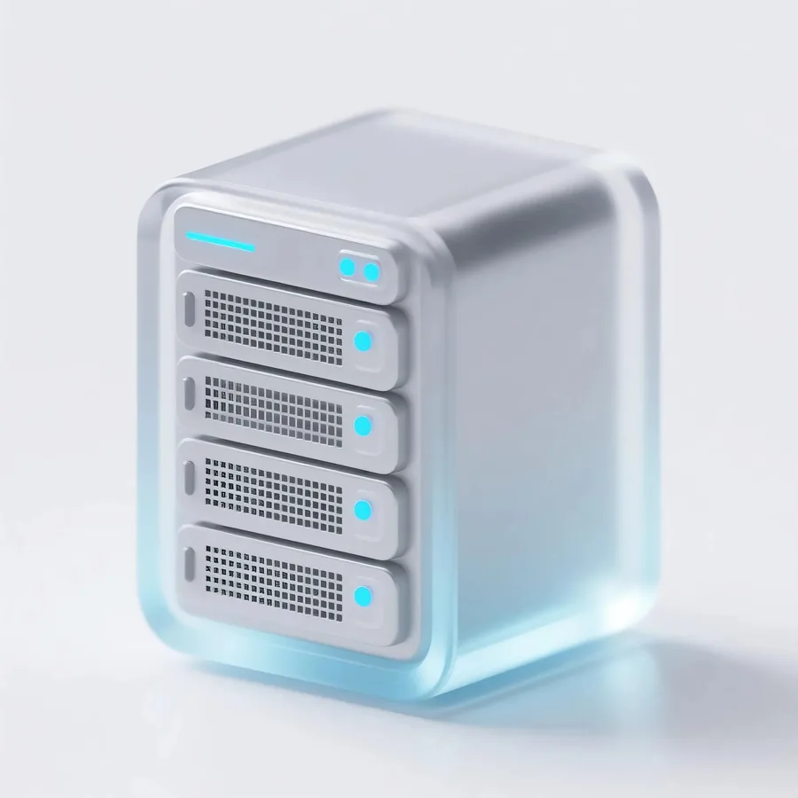
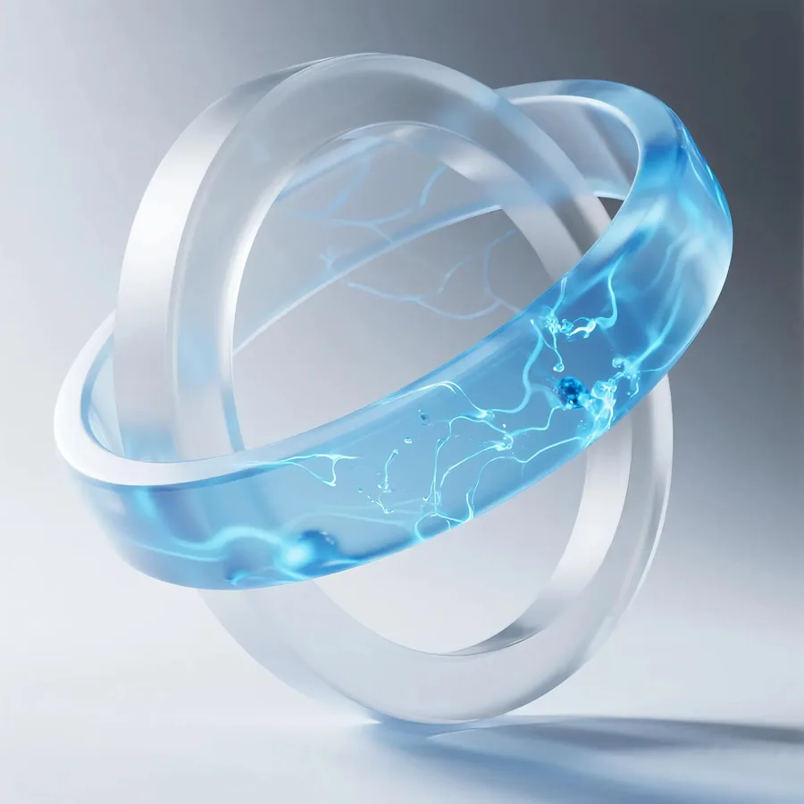
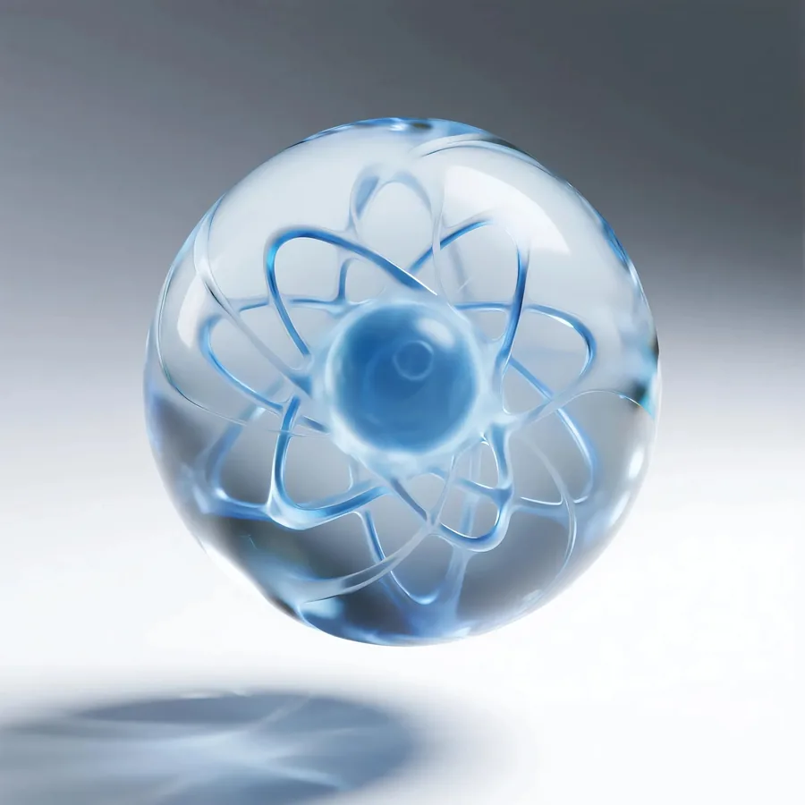
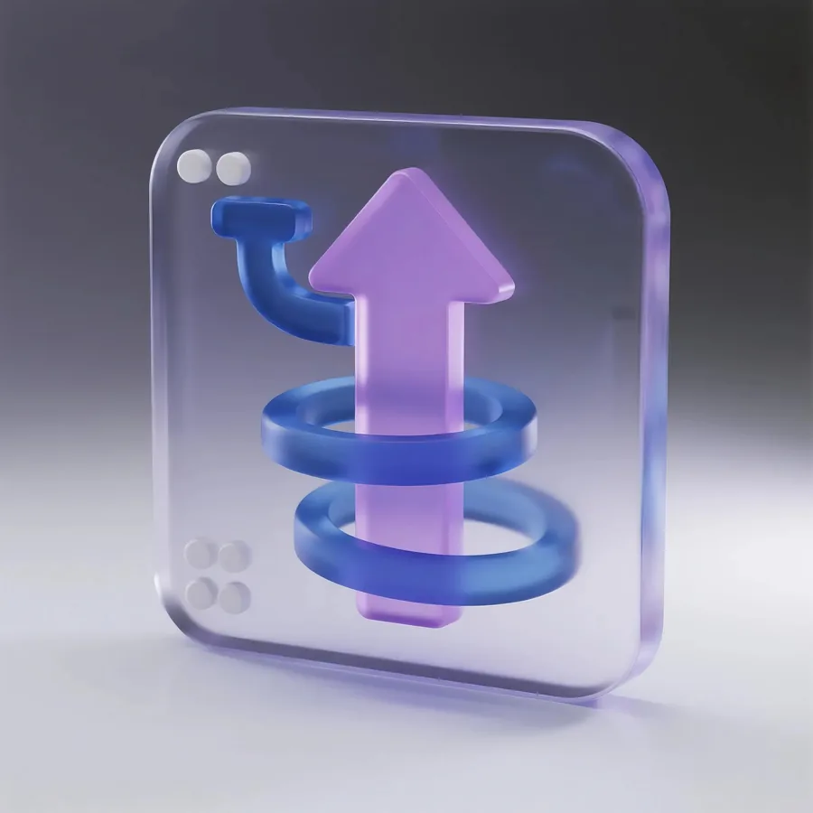
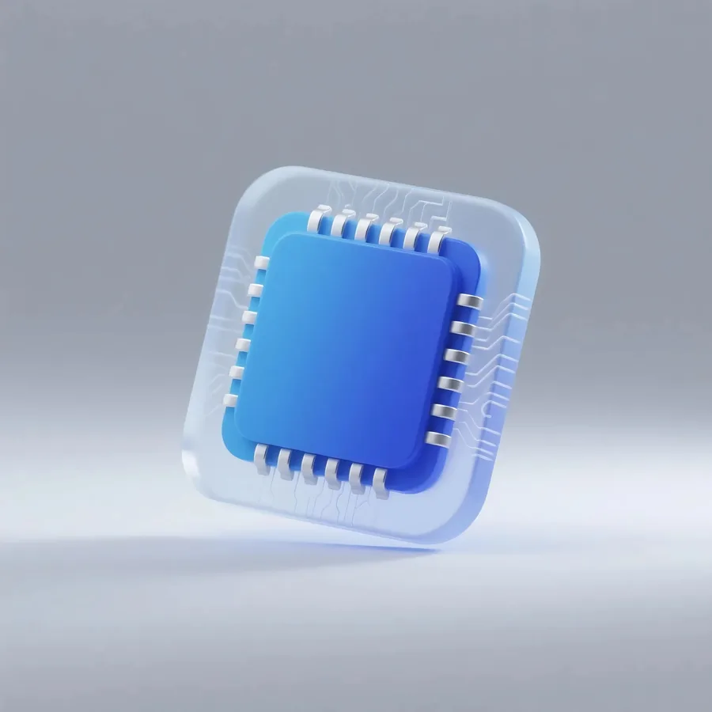

设计一系列科技风格的icon图标，适用于科技企业品牌形象、产品界面、营销素材等场景。以简洁、现代、富有科技感为设计方向，打造具有品牌识别度的视觉符号体系。
围绕"科技、创新、未来"的核心关键词，采用简洁的线条与几何形态，结合渐变光影与科技蓝色调，塑造具有现代感与专业度的图标视觉语言。每个图标在保持统一风格的同时，确保识别清晰、应用灵活。
可用于产品界面中的功能图标、营销素材中的装饰元素、品牌宣传中的视觉符号，以及PPT演示、技术文档等企业传播素材中，丰富品牌视觉层次。




